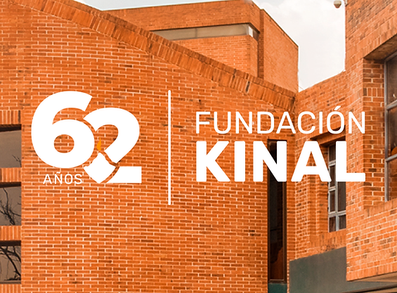

El trabajo bien hecho
Kinal es un Centro Educativo privado, no lucrativo, dirigido a la formación técnica profesional de jóvenes y adultos, de beneficio colectivo y asistencia social en favor de los sectores más necesitados de la comunidad. Nuestro valor fundamental es enseñar a realizar el trabajo bien hecho, que sea la base de la superación de alumnos y el medio para servir a los demás.
Jóvenes veneficiados
k
25K
k
1.5K
k
6K
k
31.5K

62 años de historia
Estamos celebrando 62 años de historia, 62 años de ayuda a la juventud y educación en Guatemala.Nuestro proyecto está dividido en cuatro Programas o Escuelas a las que se accede en función de la edad y el grado académico que posee. El valor fundamental es enseñar a realizar el trabajo bien hecho, que sea la base de la superación de los alumnos y el medio para servir a los demás. La formación doctrinal y espiritual está a cargo de la prelatura del Opus Dei, institución de la Iglesia Católica, que ayuda a encontrar a Cristo en el trabajo, la vida familiar y el resto de las actividades ordinarias.

Formación humana
Misión
Visión
Valores
Educación general básica
Kinal ofrece su programa de Educación General Básica para todos aquellos jóvenes que buscan una orientación técnica y excelencia académica. La etapa de educación secundaria es un programa diseñado específicamente para cubrir las necesidades de formación y desarrollo personal en jóvenes de 12 a 15 años. Desde 2005, cientos de familias han confiado en Kinal para contribuir al desarrollo de habilidades y destrezas de sus hijos, estableciendo las bases para una futura formación técnica. Desde 2010, las promociones de Peritos con una especialidad técnica han contado con alumnos que han formado parte de nuestra comunidad educativa desde 1º Básico, siendo base fundamental para que el Centro Educativo sea reconocido tanto por empresas así como instituciones académicas en las que demuestran un alto nivel de preparación.
Nuestros sponsors
Contenido de la sección de Sponsors.